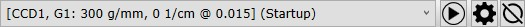

|
状态管理器
|
状态管理器可以保存和调用预定义的状态，这些状态可以包含以下设备状态：
行为
当在WITec Control中更改配置（例如更改为"拉曼 CCD2"）时，状态管理器将自动选择CCD2的启动状态。
当当前输出为"CCD2"时，您可以选择为输出"CCD2"配置的所有状态。

状态组合框
使用状态组合框选择预定义的状态之一。
请注意，如果您在执行状态后自行更改了设备，设备的实际状态可能与所选状态不同。
执行所选状态
执行当前选择的状态，以确保所有设备处于所需状态。
编辑状态
打开 状态编辑器。
打开状态重置器
打开 状态重置器：